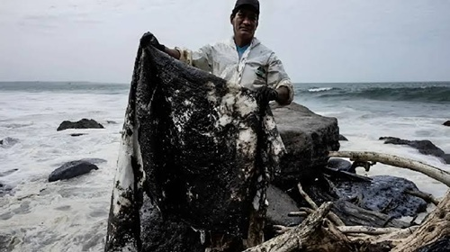

Economías Quebradas: El Impacto Socioeconómico y el Colapso Pesquero
Detrás del desastre ecológico se esconde una crisis humana devastadora que destruye el sustento de comunidades enteras de la noche a la mañana. Cuando el petróleo invade las aguas, la economía local colapsa en un efecto dominó incontrolable. El sector pesquero y de acuicultura es la primera víctima directa: las autoridades se ven obligadas a decretar el cierre inmediato de las zonas de captura para evitar que mariscos y peces contaminados con toxinas cancerígenas lleguen al plato de los consumidores. Para miles de pescadores artesanales y mariscadores, esto significa la pérdida instantánea de su único ingreso, transformando la abundancia del mar en deudas, desempleo y desesperación.
Las pérdidas financieras son monumentales y se extienden mucho más allá de las redes de pesca. Las embarcaciones, los muelles y las costosas herramientas de trabajo quedan inservibles, impregnados de un alquitrán pegajoso cuyo costo de limpieza o reemplazo es astronómico. Paralelamente, el mercado sufre una crisis de desconfianza severa; la reputación de los productos marinos de la región queda manchada durante años, provocando que los compradores huyan hacia otros proveedores, incluso mucho después de que las restricciones sanitarias oficiales hayan sido levantadas por completo.